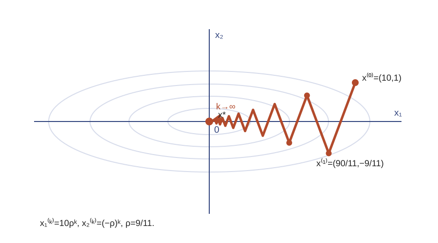
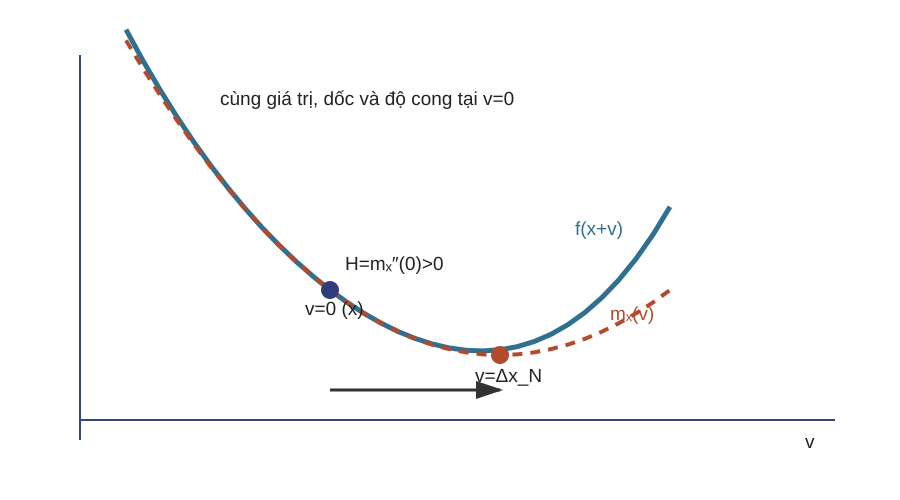
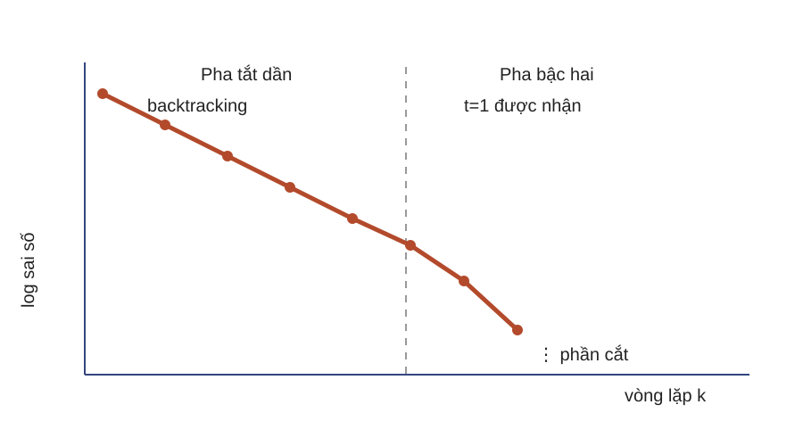
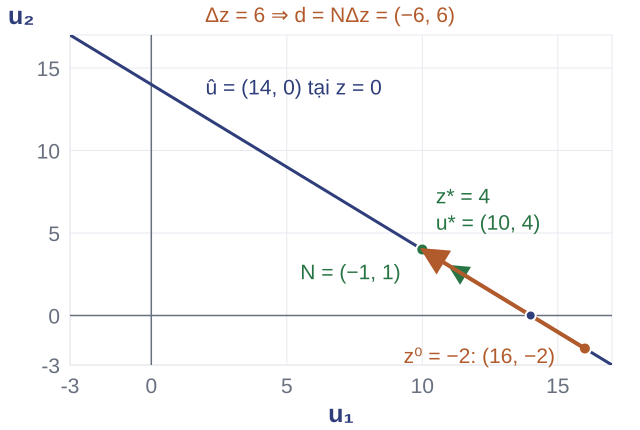

B. Độ cong nhỏ Bước có thể quá dè dặt theo hướng phẳng.
Độ cong lớn Bước lớn dễ vượt qua đáy theo hướng dốc.
Một bước vô hướng phải thỏa hiệp giữa các hướng; điều kiện hóa quyết định mức thỏa hiệp.
Khuôn A không quy định cách đo độ dài của một hướng. Phần B dùng quỹ đạo exact line search để tạo nhu cầu chọn chuẩn phù hợp với hình học đường mức.
Nguồn: MIT Lecture 16, trang 10-8, 10-13; Boyd & Vandenberghe (2004), §§9.3–9.4.
Quỹ đạo zigzag có quy luật 
Với tìm kiếm đường chính xác:
$$t_0=\frac{g^Tg}{g^THg}=\frac2{11}.$$
$$x_1^{(k)}=10\rho^k,\quad x_2^{(k)}=(-\rho)^k,\quad \rho=\frac9{11}.$$
Dấu $x_2$ đổi mỗi vòng; độ lớn chỉ co theo $\rho$.
Quỹ đạo không ngẫu nhiên: tìm kiếm đường chính xác làm các gradient liên tiếp trực giao nhưng không sửa hình học ellipse. Hệ số $9/11$ gần 1 giải thích tiến chậm.
Nguồn: MIT Lecture 16, trang 10-8; suy diễn trong `math-spec.md`.
Gradient là một lựa chọn chuẩn $$d=-\nabla f(x)$$
Chuẩn Euclid $-g$ là hướng giảm dốc nhất theo $\|\cdot\|_2$.
Dừng Dùng $\|g\|_2\le\varepsilon_g$ khi tiêu chuẩn này phù hợp với bài toán.
Gradient descent không đồng nghĩa với steepest descent theo mọi chuẩn.
Gradient phụ thuộc tích vô hướng Euclid dùng để nhận dạng vector từ đạo hàm tuyến tính. Đổi chuẩn sẽ đổi hướng được gọi là dốc nhất.
Nguồn: Boyd & Vandenberghe (2004), §9.3; MIT Lecture 16, trang 10-7.
Giảm dốc nhất theo chuẩn tổng quát Chuẩn đối ngẫu của $\|\cdot\|$ được định nghĩa bởi
$$\|g\|_*=\max_{\|v\|\le1}g^Tv.$$
$$d_{\mathrm{nsd}}=\operatorname*{argmin}_{\|v\|=1}g^Tv,\qquad d_{\mathrm{sd}}=\|g\|_*d_{\mathrm{nsd}}.$$
Đã chuẩn hóa $d_{\mathrm{nsd}}$ chỉ cho phương.
Không chuẩn hóa $g^Td_{\mathrm{sd}}=-\|g\|_*^2$.
Phải phân biệt hai quy ước vì tìm kiếm đường có thể hấp thụ độ lớn hướng. Định nghĩa chuẩn đối ngẫu cho thấy trực tiếp giá trị dốc nhất của hàm tuyến tính trên quả cầu đơn vị.
Nguồn: Boyd & Vandenberghe (2004), §9.4.1; MIT Lecture 16, trang 10-11.
Chuẩn bậc hai như tiền điều kiện Cho $W\in\mathbb S_{++}^n$ và $\|v\|_W=(v^TWv)^{1/2}$. Tính hướng bằng cách giải hệ
$$Wd=-g.$$
$W=I$ Thu lại hướng gradient Euclid.
$W\approx H$ Đổi tỷ lệ theo độ cong và giảm zigzag.
Nếu $\mu I\preceq H\preceq MI$ trên tập mức và chọn bước phù hợp, gradient hội tụ tuyến tính; $\kappa=M/\mu$ chi phối cận xấu nhất.
Chọn chuẩn tương đương chọn hình cầu đơn vị phù hợp với đường mức. Khi $W=H$ của một bậc hai, hướng trùng hướng Newton; đây là cầu nối sang phần C. Kết luận tuyến tính là có điều kiện, không suy chỉ từ tính lồi.
Nguồn: Boyd & Vandenberghe (2004), §§9.3.1, 9.4.2; MIT Lecture 16, trang 10-12–10-13.
So sánh hai hướng tại cùng điểm Tại $x^{(0)}=(10,1)^T$, $g=(10,10)^T$, $H=\operatorname{diag}(1,10)$:
Chuẩn Euclid Giải $Id=-g$.
$$d=(-10,-10)^T$$
Chuẩn $H$ Giải $Hd=-g$.
$$d=(-10,-1)^T$$
Câu hỏi: kiểm tra $g^Td<0$ cho cả hai và giải thích hướng nào khớp hình học đường mức hơn.
Hai tích lần lượt là $-200$ và $-110$, đều âm. Hướng theo chuẩn $H$ giảm thành phần dốc $x_2$ ít hơn và chính là bước Newton của bậc hai này.
Nguồn: Ví dụ bậc hai xuyên suốt; Boyd & Vandenberghe (2004), §9.4; tính trong `math-spec.md`.
C. 
Mô hình bậc nhất chỉ biết độ dốc.
Mô hình bậc hai thêm Hessian để đổi tỷ lệ theo độ cong.
Nhu cầu: chọn hướng thích nghi với hình học cục bộ mà không tự thiết kế chuẩn $W$.
Phần B cho thấy $W=H$ sửa hình học bậc hai. Newton biến quan sát đó thành một quy tắc cục bộ, cập nhật Hessian tại mỗi điểm.
Nguồn: Vẽ lại từ Boyd & Vandenberghe (2004), §9.5.1; MIT Lecture 16, trang 10-14.
Bậc hai được giải trong một bước Với ví dụ bậc hai xuyên suốt, giải
$$\begin{bmatrix}1&0\\0&10\end{bmatrix}\Delta x_N=-\begin{bmatrix}10\\10\end{bmatrix}.$$
Hướng $\Delta x_N=(-10,-1)^T$.
Bước đầy đủ $x^{(1)}=x^{(0)}+\Delta x_N=0=x^*$.
Trên một hàm bậc hai với Hessian xác định dương, mô hình Newton là chính hàm.
Kết quả một bước tạo trực giác trước định nghĩa tổng quát. Đây không phải tuyên bố rằng một bước Newton giải mọi hàm trơn.
Nguồn: Ví dụ MIT Lecture 16, trang 10-14; phép tính trong `math-spec.md`.
Hướng Newton từ mô hình bậc hai $$m_x(v)=f(x)+g^Tv+\frac12v^THv.$$
Nếu $H\succ0$, cực tiểu duy nhất của mô hình thỏa
$$H\Delta x_N=-g.$$
Đầu vào $g=\nabla f(x)$ và $H=\nabla^2f(x)$.
Đầu ra Hướng $\Delta x_N$ từ một bộ giải hệ tuyến tính.
Lấy gradient theo $v$ của mô hình cho $g+Hv=0$. Công thức toán có thể viết bằng nghịch đảo, nhưng thao tác triển khai luôn là giải hệ.
Nguồn: Boyd & Vandenberghe (2004), §9.5.1; MIT Lecture 16, trang 10-14–10-15.
Độ giảm Newton $$\delta_N(x)^2=-g^T\Delta x_N=\Delta x_N^TH\Delta x_N.$$
Ý nghĩa mô hình Mức giảm dự báo là $\delta_N^2/2$.
Tiêu chuẩn dừng Dừng khi $\delta_N^2/2\le\varepsilon$ trong phạm vi bảo đảm.
Không mặc định $\delta_N^2/2=f(x)-p^*$; đẳng thức chỉ đúng ở ví dụ bậc hai xuyên suốt.
Ký hiệu $\delta_N$ tránh xung đột với nhân tử Lagrange $\lambda$. Đại lượng bất biến dưới đổi tọa độ affine và sẽ dẫn sang hàm tự điều chỉnh.
Nguồn: Boyd & Vandenberghe (2004), §9.5.1; MIT Lecture 16, trang 10-16.
Thuật toán Newton đầy đủ Đầu vào: $x^{(0)}\in\operatorname{dom}f$, $\alpha,\beta,\varepsilon$.Hướng: giải $H\Delta x_N=-g$.Dừng: nếu $\delta_N^2/2\le\varepsilon$.Bước: backtracking Armijo dọc $\Delta x_N$.Cập nhật: $x^{(k+1)}=x^{(k)}+t_k\Delta x_N$.Nếu $H$ không xác định dương, tuyến bảo đảm này không áp dụng trực tiếp.
Thứ tự kiểm tra dừng trước line search tránh làm thêm một lần đánh giá khi đã đủ chính xác. Bài không mở sang Newton phi lồi, trust-region hay hiệu chỉnh Hessian.
Nguồn: Boyd & Vandenberghe (2004), §9.5.2; MIT Lecture 16, trang 10-17.
Hai pha hội tụ 
Giả thiết
$f$ lồi mạnh trên tập mức. Hessian Lipschitz trên tập mức. Backtracking dùng tham số phù hợp. Pha tắt dần: giảm hữu hạn mỗi vòng.
Pha gần nghiệm: $t=1$ và $\|x^{(k+1)}-x^*\|\le C\|x^{(k)}-x^*\|^2$.
Đồ thị minh họa đại lượng $\log\|x^{(k)}-x^*\|$, không phải dữ liệu thực nghiệm. Truy hồi sai số bậc hai làm độ dốc trên thang log tăng về độ lớn. Thiếu một giả thiết quyết định thì không được hứa tốc độ này.
Nguồn: Vẽ lại từ Boyd & Vandenberghe (2004), §9.5.3; MIT Lecture 16, trang 10-18–10-20.
Triển khai bằng bộ giải hệ Hessian dương Dùng Cholesky khi điều kiện áp dụng giữ.
Cấu trúc thưa Khai thác thưa, khối hoặc toán tử.
Kiểm tra số Theo dõi điều kiện hóa và sai số phần dư của hệ.
$$H\Delta x_N=-g$$
Chi phí chính là lập và giải hệ; không phải nhân với một nghịch đảo đã lập.
Trang được đặt trước phần tự điều chỉnh, khác thứ tự MIT Lecture 16, để đóng trọn LLO8 về thực hiện từng bước Newton trước khi chuyển sang LLO7. Chi tiết Hessian–vector và đếm phép toán được lược để dành thời lượng cho Newton–KKT.
Nguồn: Boyd & Vandenberghe (2004), §9.5.4; MIT Lecture 16, trang 10-29–10-30.
Một bước Newton phi bậc hai $$\phi(s)=s-\log s,\qquad s_0=\frac12.$$
Câu hỏi: tính $\phi'(s_0)$, $\phi''(s_0)$; giải $\phi''(s_0)\Delta s_N=-\phi'(s_0)$; tính $s_1$ và $\delta_N(s_0)^2$.
Giữ cùng ví dụ để kiểm tra ở mạch sau: độ cong của $\phi$ biến thiên nhanh đến mức nào khi $s$ thay đổi?
Tại $s_0=1/2$, $\phi'(s_0)=-1$, $\phi''(s_0)=4$, nên $\Delta s_N=1/4$, $s_1=3/4$ và $\delta_N(s_0)^2=1/4$. Không công bố đáp án trước khi người học tính.
Nguồn: MIT Lecture 16, trang 10-25; phép tính trong `math-spec.md`.
D. Phân tích cổ điển Dùng các hằng số như chặn Hessian và Lipschitz Hessian.
Khó khăn Các hằng số thường khó biết và thay đổi dưới đổi tọa độ.
Nhu cầu: một lớp hàm tự khống chế biến thiên độ cong bằng chính độ cong cục bộ.
Newton decrement đã có tính bất biến affine, nhưng bảo đảm cổ điển vẫn dùng hằng số ngoại sinh. Hàm tự điều chỉnh cung cấp một cách phân tích nội tại cho một lớp hàm đặc biệt.
Nguồn: Boyd & Vandenberghe (2004), §9.6; MIT Lecture 16, trang 10-24.
Tỷ số biến thiên độ cong Với $\phi(s)=s-\log s$, $s>0$:
$$\phi''(s)=\frac1{s^2},\qquad |\phi'''(s)|=\frac2{s^3}.$$
$$\frac{|\phi'''(s)|}{\phi''(s)^{3/2}}=2.$$
Tử số Tốc độ thay đổi độ cong.
Mẫu số Thang đo từ chính độ cong cục bộ.
Tỷ số không đổi cho thấy độ cong tự khống chế tốc độ biến thiên của nó.
Ví dụ “Một bước Newton phi bậc hai” được tái sử dụng nên không phát sinh ký hiệu mới. Tỷ số bằng 2 là trực quan định lượng dẫn trực tiếp tới bất đẳng thức trong trang định nghĩa hàm tự điều chỉnh.
Nguồn: Boyd & Vandenberghe (2004), §9.6.1; tính trong `math-spec.md`.
Định nghĩa hàm tự điều chỉnh Một chiều Hàm lồi, khả vi ba lần và
$$|\phi'''(s)|\le2\phi''(s)^{3/2}.$$
Nhiều chiều $f$ tự điều chỉnh nếu $t\mapsto f(x+tv)$ tự điều chỉnh trên mọi đường thẳng nằm trong miền.
Miền phải mở; bất đẳng thức được kiểm dọc mọi hướng hợp lệ.
Định nghĩa nhiều chiều giảm về một chiều theo mọi đường thẳng. Không kiểm một hướng duy nhất rồi kết luận cả hàm nhiều chiều tự điều chỉnh.
Nguồn: Boyd & Vandenberghe (2004), §9.6.1; MIT Lecture 16, trang 10-25.
Hàm chắn log và bảo đảm có điều kiện $$\Phi(x)=-\sum_{i=1}^{m}\log(b_i-a_i^Tx)$$
$a_i\in\mathbb R^n$, $b_i\in\mathbb R$, $m\in\mathbb N$; miền trong $\{x:a_i^Tx<b_i,\ \forall i\}$ khác rỗng.
Dựng lớp hàm Hợp affine và lấy tổng giữ tính tự điều chỉnh chuẩn.
Newton theo decrement Decrement lớn: giảm bước. Đủ nhỏ: nhận bước đầy đủ và có cận sai số.
Với hàm tự điều chỉnh chuẩn, lồi chặt, Hessian xác định dương và có nghiệm, bước giảm $t=1/(1+\delta_N)$ cho mức giảm ít nhất $\delta_N-\log(1+\delta_N)$. Khi $\delta_N<1$, cận $f(x)-p^*\le-\delta_N-\log(1-\delta_N)$ có nghĩa; đủ gần nghiệm thì bước đầy đủ được nhận và decrement tiếp theo bị chặn theo bậc hai. Đây là bảo đảm có điều kiện, không phải hội tụ vô điều kiện. Quy tắc nhân $c\Phi$ với $c\ge1$ được giữ ở tài liệu đọc.
Nguồn: Boyd & Vandenberghe (2004), §§9.6.1–9.6.4; MIT Lecture 16, trang 10-25–10-27.
Kiểm tra và giới hạn Câu hỏi: với $\psi(s)=-\log s$, $s>0$, kiểm tra bất đẳng thức tự điều chỉnh. Hàm có đạt cực tiểu trên miền này không?
Điều cần kiểm Tính $\psi''$, $\psi'''$ và so sánh hai vế của bất đẳng thức.
Điều cần kết luận Khảo sát $\psi(s)$ khi $s\to\infty$ trước khi nói về hội tụ.
Tự điều chỉnh kiểm soát biến thiên độ cong; không giữ ràng buộc $Ax=b$. Mạch sau kết hợp Newton với KKT.
Đáp án: $|\psi'''|=2/s^3=2(1/s^2)^{3/2}$, nhưng $\psi(s)\to-\infty$ khi $s\to\infty$ nên không đạt cực tiểu. Không công bố kết quả trên mặt trang trước khi người học làm.
Nguồn: Bài tập tự tạo theo Boyd & Vandenberghe (2004), §9.6.
E. 
Một bước Newton không ràng buộc thường có
$$A\Delta x_N\ne0.$$
Dù $Ax=b$, cập nhật có thể rời tập khả thi.
Kết hợp mô hình Newton của mạch trước với hệ KKT để giữ hoặc phục hồi khả thi.
Hàm tự điều chỉnh kiểm soát độ cong nhưng không bảo toàn $Ax=b$. Điểm vào ở đây là bước Newton từ mạch C và KKT từ Bài 03; hai chế độ khác nhau tùy điểm đầu đã khả thi hay chưa.
Nguồn: Vẽ lại từ Boyd & Vandenberghe (2004), §10.1; MIT Lecture 17, trang 11-2.
Ví dụ phân bổ có tổng cố định $$\min_{x\in\mathbb R^2}\ \frac12(x_1^2+4x_2^2),\qquad x_1+x_2=1$$
Dữ kiện $H=\operatorname{diag}(1,4)$; $A=[1\;1]$, $b=1$.
Nghiệm KKT $x^*=(4/5,1/5)^T$; $\nu^*=-4/5$, $p^*=2/5$.
Ca AI: hồi quy trơn $\min_w\frac12\|Xw-y\|_2^2$ với $\mathbf1^Tw=1$ và $\operatorname{null}X\cap\operatorname{null}(\mathbf1^T)=\{0\}$; dùng Newton–KKT và dừng bằng decrement hoặc phần dư.
Ví dụ số có $A\in\mathbb R^{1\times2}$ hạng hàng đầy đủ. Trong ca AI, $X\in\mathbb R^{m\times n}$, $w\in\mathbb R^n$, $y\in\mathbb R^m$; giả thiết giao hai không gian rỗng chỉ có vector không bảo đảm $X^TX$ xác định dương trên $\operatorname{null}(\mathbf1^T)$, đúng điều kiện của hệ Newton–KKT. Ví dụ số được giữ xuyên hai chế độ.
Nguồn: Boyd & Vandenberghe (2004), §§6.5, 10.1; phép tính trong `math-spec.md`.
Khử ràng buộc bằng không gian rỗng Với $F\in\mathbb R^{n\times(n-p)}$, $z\in\mathbb R^{n-p}$, chọn $A\hat x=b$ và
$$x=Fz+\hat x,\qquad AF=0.$$
Ví dụ: $\hat x=(1,0)^T$, $F=(-1,1)^T$.
$$x=(1-z,z)^T.$$
Các cột của $F$ sinh $\operatorname{null}A$ và $\operatorname{rank}F=n-p$. Tham số hóa biến mọi $z$ thành một điểm khả thi. Với ví dụ, bài rút gọn có đạo hàm $-1+5z$ và nghiệm $z=1/5$.
Nguồn: Boyd & Vandenberghe (2004), §10.1.2; MIT Lecture 17, trang 11-4–11-5.
Newton từ điểm khả thi Cho $\operatorname{rank}A=p<n$, $w\in\mathbb R^p$ và $H$ xác định dương trên $\operatorname{null}A$. Giải
$$\begin{bmatrix}H&A^T\\A&0\end{bmatrix}\begin{bmatrix}\Delta x_N\\w\end{bmatrix}=-\begin{bmatrix}g\\0\end{bmatrix}.$$
Giữ khả thi $A\Delta x_N=0$ nên $A(x+t\Delta x_N)=b$.
Dừng $\delta_{\rm eq}^2=\Delta x_N^TH\Delta x_N=-g^T\Delta x_N$; dừng khi $\delta_{\rm eq}^2/2\le\varepsilon$.
Điều kiện dương trên không gian rỗng đủ cho hệ KKT khả nghịch dù $H$ không dương trên toàn không gian. $w$ chỉ là biến phụ của hệ bước khả thi, không phải cập nhật $\Delta\nu$. Tìm kiếm đường trên $f$ vẫn phải giữ điểm thử trong miền.
Nguồn: Boyd & Vandenberghe (2004), §10.2.1; MIT Lecture 17, trang 11-6–11-8.
Tính một bước khả thi Từ $x^{(0)}=(1/2,1/2)^T$, giải hệ Newton–KKT với $g=(1/2,2)^T$:
$$\Delta x=\left(\frac3{10},-\frac3{10}\right)^T,\qquad w=-\frac45.$$
Kiểm tra khả thi $A\Delta x=3/10-3/10=0$.
Cập nhật $x^{(1)}=x^{(0)}+\Delta x=(4/5,1/5)^T=x^*$.
Câu hỏi: vì sao mọi $t$ trong tìm kiếm đường đều giữ $Ax=b$?
Vì $A(x+t\Delta x)=Ax+tA\Delta x=b$. Bậc hai được giải trong một bước đầy đủ, đồng thời hướng vẫn nằm trong không gian rỗng.
Nguồn: Ví dụ phân bổ trên trang trước; phép giải trong `math-spec.md`.
Newton khi chưa có điểm khả thi Bắt đầu với $x\in\operatorname{dom}f$, $\nu\in\mathbb R^p$ và giảm đồng thời
$$r_d=\nabla f(x)+A^T\nu,\qquad r_p=Ax-b.$$
Giải hệ: $\begin{bmatrix}H&A^T\\A&0\end{bmatrix}\begin{bmatrix}\Delta x_N\\\Delta\nu_N\end{bmatrix}=-\begin{bmatrix}r_d\\r_p\end{bmatrix}$, với $\Delta\nu_N\in\mathbb R^p$.Chọn bước: quay lui trên chuẩn phần dư và yêu cầu $x+t\Delta x_N\in\operatorname{dom}f$.Cập nhật: $(x,\nu)\leftarrow(x+t\Delta x_N,\nu+t\Delta\nu_N)$.Dừng: $\|r_d\|_2\le\varepsilon_d$ và $\|r_p\|_2\le\varepsilon_p$.Đặt $r=(r_d^T,r_p^T)^T\in\mathbb R^{n+p}$. Dùng $\alpha\in(0,1/2)$, $\beta\in(0,1)$; từ $t=1$, co $t\leftarrow\beta t$ đến khi điểm thử thuộc miền và $\|r(x+t\Delta x_N,\nu+t\Delta\nu_N)\|_2\le(1-\alpha t)\|r(x,\nu)\|_2$. Khác chế độ khả thi, hàng dưới có $-r_p$ và biến thứ hai là cập nhật $\Delta\nu_N$.
Nguồn: Boyd & Vandenberghe (2004), §10.3; MIT Lecture 17, trang 11-10–11-11.
Tính một bước phục hồi khả thi Tại $(x^{(0)},\nu^{(0)})=(0,0,0)$:
Phần dư $r_d=(0,0)^T$.
$r_p=-1$.
Nghiệm hệ $\Delta x=(4/5,1/5)^T$.
$\Delta\nu=-4/5$.
Hệ đối xứng bất định: ưu tiên LDLT có pivot; dùng bổ Schur khi cấu trúc và điều kiện hóa cho phép. Không lập nghịch đảo.
Câu hỏi: kiểm tra phần dư mới bằng 0 sau bước đầy đủ.
Thế $x^*$ và $\nu^*$ cho $Hx+A^T\nu=0$ và $Ax-b=0$. Với bài không bậc hai, cần nhiều vòng cùng quay lui theo chuẩn phần dư. Kết quả này cung cấp trực tiếp hàng Newton–KKT trong bảng quyết định ở phần kết.
Nguồn: MIT Lecture 17, trang 11-12; phép giải trong `math-spec.md`.